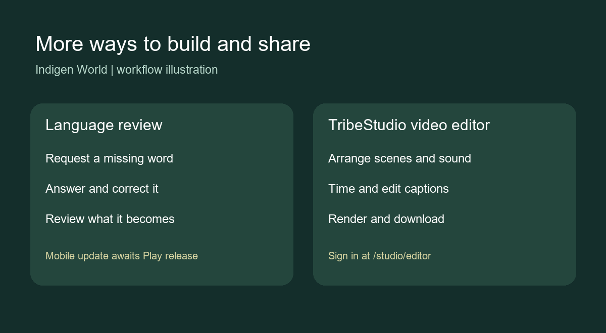

Language contributions can have different useful homes. The updated review desk lets reviewers choose a dictionary word, a regional variant, an expression, an example sentence, a translation pair or private training material. Training material requires the contributor's consent. Contributors can correct an answer returned for changes.
The language loop connects missing-word requests with the word queue and gives Kawuri lessons based on published dictionary entries. The mobile doors in Explore, search and topic pages require Android 0.1.29 (38), which still awaits its Play release.
Creators can open TribeStudio, sign in and go to /studio/editor to create a project, arrange scenes, add music, stickers and text, edit captions, and request a preview or an MP4 export at 720p or 1080p. Saved projects can be reopened and revised.
For Kasem captions, supply the words and use the timing tool; automatic transcription supports English and French. Caption timing is a first pass, so check and edit each cue. Projects can render up to five minutes, with limits on layers and source media. Long 1080p High exports have not been timed against the worker's runtime ceiling.
The backend, review desk and TribeStudio editor were deployed on 30 September 2026. Live bundles and callable access checks passed. Authenticated production rendering still needs a smoke test. Everyday Expressions and the knowledge workspace are separate releases.